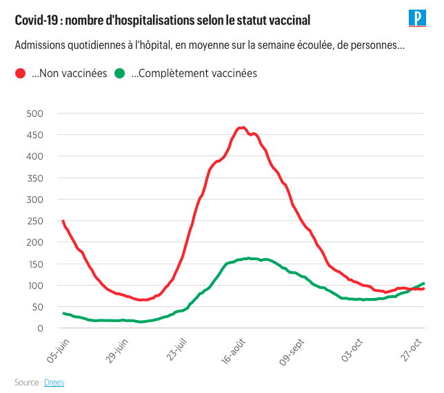
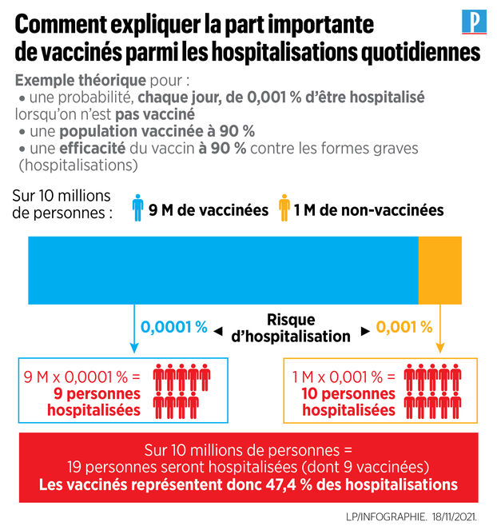
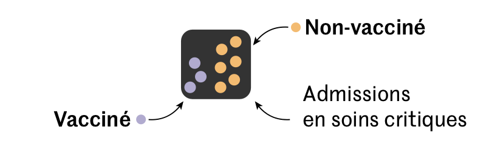
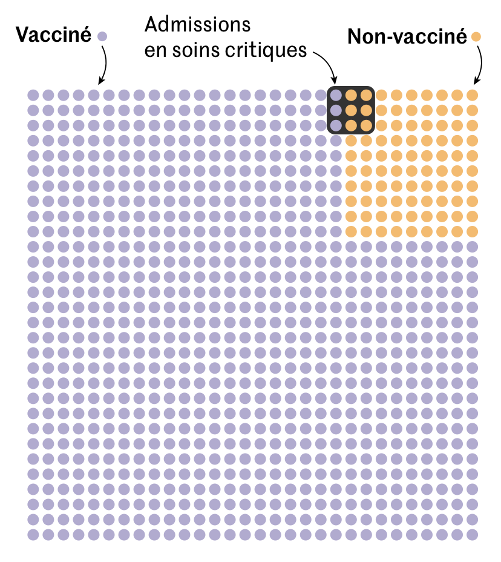

Loi de Bayes et Fake news#
Les exercices suivants ne traitent pas à proprement parlé de la soutenabilité mais permettent d’expliquer la nécessité un regard critique et scientifique face à certaines affirmations apparement justes. Les exercices peuvent facilement être adaptés sur un sujet autre (par exemple des chiffres sur la déforestation ou la pollution).
Covid-19 : pourquoi y a-t-il désormais plus de vaccinés que de non-vaccinés admis à l’hôpital ? :#
Auteur : Etienne Sujet : Loi de Bayes, probabilité conditionelle, loi uniforme et espérance
1e |
2e |
3e |
4e |
|---|---|---|---|
x |
x |
Fin octobre 2021, le nombre de personnes vaccinées du covid dépasse le nombre de personnes non vaccinées dans les hopitaux français:

Source : Le Parisien
Peut-on en conclure, comme cela a pu être déclaré, qu’il s’agit d’une preuve que les vaccins ne sont pas efficaces?
A ce moment là, la France est à \(90\%\) vaccinées. On note \(V\) l’évènement “une personne tirée au hasard est vaccinée”.
Que vaut \(P(V)\) ? Que vaut et que représente \(P(\bar{V})\)? De quelle loi de probabilité s’agit-il?
On estime à \(0,001\) la probabilité d’être hospitalisé chaque jour pour une personne vaccinée et à \(0,0001\) pour une personne non vaccinée. On note \(H\) l’évènement “la personne tirée est hospitalisée”.
De quel type de probabilités s’agit-il?
Quelle est la probabilité qu’une personne soit hospitalisée et vaccinée ? Hospitalisée et non vaccinée?
Comparer ces valeurs
En moyenne sur 10 millions de personnes, combien de personnes vaccinées et non-vaccinées seront hospitalisées? Conclure sur ce paradoxe
Solution en image :

Source : Le Parisien
Deuxième version avec des sources différentes:
Le paradoxe de Simpson, aborder les chiffres avec recul :#
Auteur : Etienne Sujet : Loi de Bayes, probabilité conditionelle, loi uniforme et espérance
1e |
2e |
3e |
4e |
|---|---|---|---|
x |
x |
Dans un article du Monde, on peut lire les chiffres des admissions à l’hôpital pour le Covid au 31 mai 2021 : “Les non-vaccinés ne représentent « que » 56 % des hospitalisations conventionnelles, contre 38 % pour les personnes complètement vaccinées.”
Il y a donc 56% de patients non vaccinés et 44% totalement ou partiellement vaccinés.
A première vue, est-ce que cela signifie qu’on a presque autant de chance d’aller à l’hôpital en étant vacciné que non vacciné?
On note \(V\) l’évènement “une personne tirée au hasard est vaccinée”. On note \(H\) l’évènement “une personne tirée au hasard est admise à l’hôpital”.
Sachant qu’une personne a été admise à l’hôpital, quelle est la probabilité que cette personne soit vaccinée? Et non vaccinée?
De quel type de probabilité s’agit t-il?
A ce moment, la France est à \(90\%\) vaccinée. On pourra considérer qu’il y a 6000 hospitalisations sur la population de 60 millions d’habitants.
Que vaut \(P(V)\), \(P(\bar{V})\)? Que vaut \(P(H)\)?
En utilisant la loi de Bayes, calculer la probabilité d’être hospitalisé en étant vacciné: \(P_V(H)\). Faire le même calcul pour une personne non vaccinée \(P_{\bar{V}}(H)\).
Comparer les deux valeurs et conclure sur l’efficacité des vaccins d’après ces chiffres.
Bonus: En réalité la probabilité d’être hospitalisé \(P(H)\) n’est pas nécessaire pour conclure. Faire la même comparaison en faisant disparaitre \(P(H)\) des calculs. (Calculer le rapport des deux probabilités)
Explication : Une statistique ne nous dit pas qu’elle était la population de départ. Lorsque l’on regarde un chiffre, il faut réfléchir sur la population qui a donné cette probabilité. Dans notre cas, si on regarde juste à l’hôpital:

Mais si on regarde dans la population globale:

Voir aussi : https://fr.wikipedia.org/wiki/Paradoxe_de_Simpson